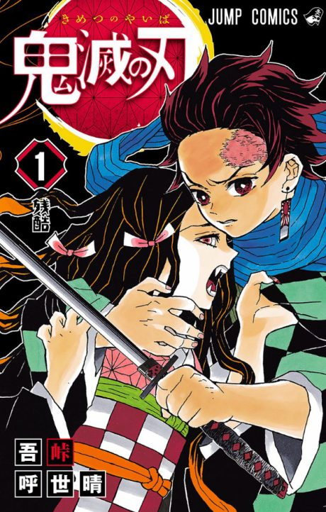

Demon Slayer
鬼滅の刃
Tanjiro's family is slaughtered by a demon and his sister Nezuko is turned into one. He trains to become a demon slayer and find a way to turn her back.
After the anime, read the manga from Chapter 158.
8.2AniList score
—Animeter, no votes yet
63episodes, 5 seasons
Rate it or report where you stopped
Filler
Only episode 27, an anime-original Rengoku prologue to the Mugen Train arc, is filler.
Episodes63
Canon62
Filler1
Mixed0
123456789101112131415161718192021222324252627282930313233343536373839404142434445464748495051525354555657585960616263
CanonMixedFillerRecap
Skip list (filler episodes)
27Sources: Anime Filler Guide